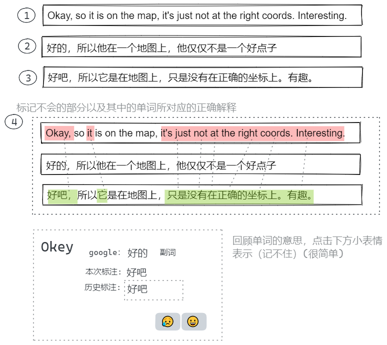

查典式学习法
要求自己翻译和标记是违反想偷懒的天性的，但这个方法就是靠这两步才能让自己在实践中积累知识
例如：英文学习方法
对于一段英文，先标记哪里看不懂然后翻译，再标记本来以为看懂了但实际没看懂的单词
对于一段中文，先用自己的方法翻译为英文，不会的地方空着，然后将中文翻译为英文，再标记没翻译出来和用错了的单词
多次行此方法就可以得到自己实际能应用到的高频单词以及易遗忘的单词，在标记过程中自然加深了对相关单词的记忆和使用方法的了解
必须强制自己每次在查看英文意思和想将自己的意思转为英文的时候进行上面两步
英译中
1.
Okay, so it is on the map, it's just not at the right coords. Interesting.
2.
好的，所以他在一个地图上，他仅仅不是一个好点子
3.
好吧，所以它是在地图上，只是没有在正确的坐标上。有趣。
4.
Okay
, so
it
is on the map,
it's just not at the right coords. Interesting.
中译英
2.
yes, so you need modif your code
3.
Yes, so you need to change the coordinates in your code
4.
Yes, so you need
to change the coordinates in
your code
js
export enum LanguageType {
zh = 'zh',
en = 'en',
}
export class LearningMarkers {
type = {
origin: LanguageType.en,
target: LanguageType.zh,
} // 表明此次翻译的类型是 en-> zh
originalText = ''
myTranslation = ''
correctTranslation = ''
mark: {
start: {
filed: 'originalText' | 'myTranslation' | 'correctTranslation'
position: [number, number]
}
end: {
filed: 'originalText' | 'myTranslation' | 'correctTranslation'
position: [number, number]
}
}[] = []
markUnit: string[] = []
}

DeepL 翻译